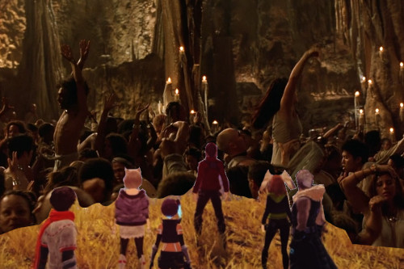

I started Xenoblade 3 on release in like July, and I finished the story right after Christmas at 121:10, but I have been continuing to play it until I was at a good place to start a new game +. I finished every quest I could find, all my heroes are ascended, and my weapons are upgraded. I can't believe it took me 142 hours for ONE playthrough. It's a long game!
I took physical notes! So much that my pen even died. I'm not quite sure what "corrugated farbler gyroid" means, but I'm glad I wrote them because it took me so long to finish this game. New idea: the game ends immediately after 3 months pass from starting.
If you don't like:
you probably shouldn't play Xenoblade anything.
best boy
Some names were changed and terms E rated, but they didn't modify the story. This was not the Xenoblade 2 disaster.
The story in this one is on par with 2, but I feel like 2 had a decent explanation and a more shocking twist. I liked all the party members! Each of them got their own backstories and personalities. Noah and Mio go the deepest of course.
The world is open, but still feels more linear than the last 2 games. You're mostly only locked out by level of the enemies in the area.
They forgot to explain a couple very important details that don't make sense with prior knowledge from the last game.
I once had to cover my ears and run away
You need to have a certain hero in your party to be able to see the ? on the map or trigger the quest
you have 6 permanent party members plus 1 extra hero. there's way too much going on!
I like the song a lot but its opening is far too bold to hear every time you open the menu especially when it restarts if you hit the wrong menu.
Some chests were locked, even if you were strong enough to clear the enemy around them. Other areas are not accessible until you hit a point in the plot and then SUDDENLY the landscape changes and it's accessible.
In Xenoblade 2, I came out feeling really confused. After playing Torna and then replaying 2, I got really into it. I don't know if playing 3 again will resolve confusion or if they plan to make me play $30 for an explanation with the expansion pass.
Somewhere in the promotional interviews, someone on the team claimed there was 4x more area to explore than the last games. They forgot to mention a HUGE chunk of the area is empty water space. The game is still huge though.
I highly recommend playing both 1 and 2 before this game. It's not necessary but it references those games a lot, much more than you need to play 1 before 2.
Small glitches were encountered. None were game breaking other than one. Twice, a unique beast decided he was no longer fighting me at the end of the battle and walked off. Empty colonies still have the bustling city background noise. The "choose your side" battle noises are NOT X direction sensitive and you can hear them from super high up if your X, Y location is near. Biggest glitch was a total crash where I thanked kami-sama for autosaves.
Hit L and R at the same time to take a clean screenshot!
I'm pretty sure they never tell you that you can only set ONE map marker per region. I marked a whole bunch before realizing this.
The ocean animation made me seasick. Too realistic?
People die and Noah won't stop sending.
"It stops being our TV when you put naked boys on it." -Ryan
I felt like there was influence from Nier: Automata. Chain attacks definitely had infulence from Persona 5 all out attacks. The new hero animation reminds me of Smash announcements.
The amiibo scanning loading animation is fake and you can remove the amiibo when it starts.
Many girls get their term markers in ecchi sketchy places such as boob and inner thigh.
This game had modifier buttons that changed the menus when held. IDK if I just haven't played a game with this but it's a first for me!